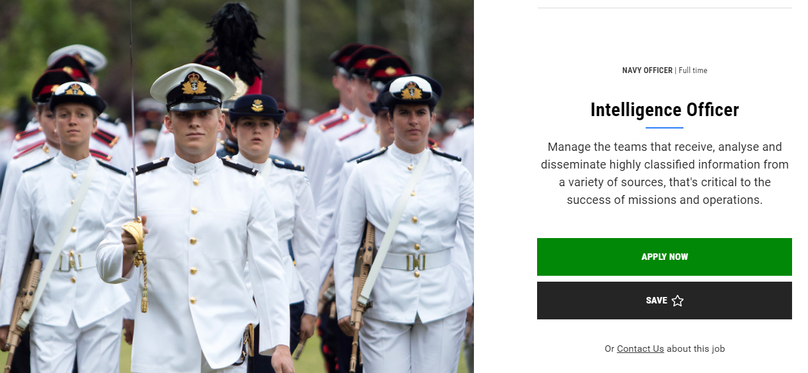
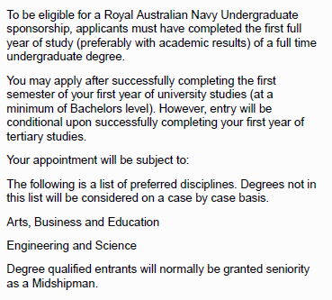
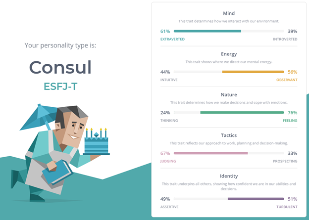
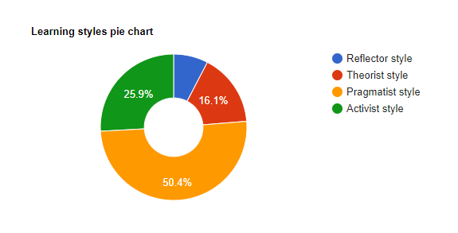
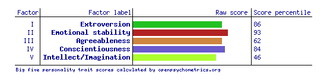

Personal Information
My name is Richard, I grew up in Adelaide and worked in IT for 7 years before joining the Navy. I am Australian, speak English as a primary language and am learning German. In July 2012, I was implanted with two Philips HiTagS (RFID) that I use for access to my home and various other applications. This was a result of my identity being stolen and used across Europe to manipulate my identity and gain access to personal financial accounts.
Interest in IT
IT has been a big part of my life since I was quite young. My interest first began when I was in primary school in a basic IT class. I remember opening a web browser for the first time and searching whatever I wanted in Google. As I grew up, I was in front of the computer almost every day trying new things and exploring the internet.
Prior to joining the Royal Australian Navy, I was employed by Vectra Corporation Limited as a solutions architect, working in the public education vertical. My team and I developed secure ICT infrastructure solutions for schools in South Australia. I worked closely with our lead engineers and security analysts to develop best of breed solutions suitable to protect but engage students of all ages.
I didn’t think I would ever require a university degree as I went straight into the industry after school and started climbing the corporate ladder. But after a few years of service in the Navy, I thought to myself that I wanted to do more than become a ships mechanic. I considered what it would take to be a naval intelligence officer, and university was a prerequisite. I have now applied for my first two subjects with RMIT before transferring to the Australian Defence Force Academy in Jan 2021.
After completing my first two subjects with RMIT, I expect that I will utilise a lot of my underpinning knowledge taken from working in the field, but also embracing new skills taught by the lecturers at RMIT. So far, working with Thomas has been quite fulfilling as he is truly knowledgeable and enthusiastic.
Ideal Job

Navy Intelligence Officer Webpage
Navy Intelligence Officer.pdf
My ideal job would be an intelligence role within the Royal Australian Navy. This role would heavily incorporate cyber and data security.
As a Naval Intelligence Officer (NIO), your core role is to deliver a wide range of intelligence in an easy to understand brief, that provides information to command and other management entities. The role of a NIO is appealing to me as I have developed a keen interest in issues surrounding Australia’s national security and this role directly allows me to pursue this curiosity in promoting Australia’s vital interests. I am extremely interested in working in Australian intelligence, especially at a time when our regional and international security environment is rapidly changing, hence working in cyber intelligence for the Royal Australian Navy would be a highly rewarding role.
To join as an NIO, you are required to have a degree that backs the vertical of intelligence, and ideally some life skill/on the job training of a similar role from the outside (of Defence). This could mean working for an IT firm with a cybersecurity wing/team or working for a public service organisation that maintains strict data protection rules.
Currently, I believe I possess skills in management, working as part of a cohesive team and data security. My past role at Vectra has allowed me to further grasp the requirements for data and cybersecurity. Although I did not get hands-on with the cyber analysts, it gave me valuable insight into what is necessary for protecting a company or schools network.
Even with my current skill set, the role of an NIO requires an even greater deal of knowledge in a specialised field. My goal upon successful completion of the first two subjects of the Bachelor of Information Technology through RMIT, is to enter the Australian Defence Force Academy in Canberra and continue my studies through a Bachelors in Computing and Cyber Security. This degree will allow me to focus my studies on a more accurate field and then continue to apply those learnings in everyday life.
Looking forward into the next 5 years, I will be accessing many resources to help develop my skill set both formally and informally. Studying through RMIT and UNSW will provide continuous educational advancement to assist in the field I wish to work in. Utilisation of web content such as YouTube to gain further understanding on areas not covered by the courses held at the universities. And finally, by on-the-job training whilst in the Navy, I will be able to apply knowledge taught by the universities into practical application, delivering an end goal of unifying intelligence to the command team on a ship or shore posting.
Key Skills
- Effective communication
- Leadership qualities
- Punctuality
- Positive teamwork
- Professional and dependable
- Defence disciplined
Personality Profile
Myers-Briggs results
Learning Style test results
Big Five test results
After reviewing my results across the 3 different tests, I see the qualities highlighted to be an accurate representation of my personality. Interestingly, the results of this Myer-Briggs test differed from when I first did this upon joining the Navy (in Recruit School). This could be attributed to both the high levels of personal growth and practical knowledge the navy has provided me. Moreover, based on my experience, and as highlighted in the results, I have an extremely agreeable, practical and dependable personality which allows me to be a valuable team member. Hence, I am comfortable with a more authoritative role in the team or a more supportive one. To me, a great team is one which has strong communication, support and are goal focused, thus when forming a team, my adaptability allows me to gel with various personalities and contribute to different roles.
Project Idea
Overview
My IT project idea will be focusing on developing a solution to provide sub dermal RFID implants to high ranking or valuable personnel in large corporate and military organisations where security is paramount. I believe that this solution will assist the ever-growing fraud risk, along with mitigating risks revolving identity theft. From experience, identity theft is not easy to recover from. The idea of subdermal implantation is not for everyone, but with the idea of security, I believe that this solution would be considered by anyone.
Motivation
In the many diverse working environments that I have worked in, I have witnessed the frequent loss, misplacement or utter negligence when it comes to handling identification or secure login devices. My current workplace has many thousand employees, and maintaining control of your identification is top priority. Unfortunately this isn’t always the case for employees often leaving their computers unlocked, their IDs on their desk or in the lunchroom.
By utilising a cost effective technology such as Radio Frequency Identification (or RFID) that can be implanted, it will completely mitigate the risk of these physical assets being left unmonitored.
In some cases, leaving your ID around or your computer unlocked can be an accident, but it might only take one accident and 5 minutes for the wrong person to get ahold or or access sensitive data which could cost an organisation millions of dollars, or in the case of the military, people’s lives.
According to Forbes, over the past 10 years, there have been in excess of 300 data breaches involving theft of over 100,000 or more records. In 2018, the US saw over 1,200 data breaches with over 440 million records exposed and in 2019, more than 4 billion records were exposed within the first six months (Sobers, 2020, p.4). This has motivated me to develop a solution that will continue to lower risk of data intrusion.
Description
Scannable technology such as RFID or Near Field Communication (NFC) are becoming more and more common in everyday use such as mobile phones for applications such as PayWave, and in access cards such as building access, secure area access and car park access. These technologies have been developed over the years and have become smaller and more readily available. Benefits of using such technologies include ease of use, easily replaceable, readily available and that they do not require batteries. Although there are many benefits, there are always disadvantages to such products. The limitations of these devices are that if you do not have the device on you, you do not gain access, the range of the technology, and if you only use RFID, it can only be read, meaning the technology would require replacement if a new code was required. (NFC being read/write).
Compared to using your phone’s NFC chip to gain access, utilising a chip under the skin, ideally in the hand, would allow for ease of access at all times. The chips are always on, and simply close a loop in a system, removing any need for your phone to have a charged battery to gain access etc.
Regarding the security aspect, a subdermal implant removes any risk of the ID being lost or stolen as it is on your person at all times, although there are some methods of theft, but the pros outweigh the cons in this instance. There are chances of a thief physically cutting the RFID from the wearer, physical coercing to gain access, blackmail and of course, hacking the system to gain access from their own RFID chip (High, 2020, p.1).
My target market for this project would be large corporate business and the military with highly sensitive data that would pose great risk if leaked, lost or compromised. By implanting employees of these big entities, it would wipe out risk of identity theft, and lower the overall risk of ‘being hacked’ by copying credentials. A thief in this instance wouldn’t think to look for a chip over a physical piece of identification, again, lowering the overall risk of fraud or data breaches.
In 2014, the world RFID market was worth US$8.89 billion, with market value set to rise greater than US$12 billion by 2020 (Radio Frequency Identification, 2020, para.4). After hearing from tutor Gayan from intro to programming, it was noted that some ready-made software could become dated and that you would lose product support, but the above statement gives confidence that the application of RFID will always be supported, and there will never be a shortage/supply of the technology.
Tools and Technologies
The xEM T5577 RFID chip runs on a 125kHz frequency that comes in at $49.00USD per chip (Dangerous Things, 2020). These chips have been improved over time and have been put through a series of tests to ensure a quality product. These chips come with a sterile injector assembly and the chip is pre-loaded inside ready to be implanted.
An xEM access controller is required on each door or accessway to provide/grant access to a specific area. The T5577 chips are programmable to these controllers and are required to be ‘whitelisted’ to the device before they become detected.
Skills Required
Finding the skills required to complete this task would be relatively easy as it is not very complex. Skills in basic coding to have the xEM access controllers added to a standalone network and encrypted. It would be recommended that this network be secured by encryption as to prevent unwanted access, and provide no additional means of access to the company/organisation’s secured network.
Outcome
Upon successful completion of this project, I am certain that the risk of high value users having their identification stolen is significantly reduced. This cost effective solution is a simple means of mitigating identity fraud and adding an additional layer of security to the company or organisation that takes on this project. I believe that by ensuring a lower risk of access control, confidence will be instilled with command and/or management staff where my solution will be applied.
Bibliography
Dangerous Things. 2020. Xem RFID Chip | RFID & NFC Chip Implants And Biohacking Products. [online] Available at: https://dangerousthings.com/product/xem/ [Accessed 4 September 2020].
En.wikipedia.org. 2020. Radio-Frequency Identification. [online] Available at: https://en.wikipedia.org/wiki/Radio-frequency_identification [Accessed 4 September 2020].
High, T. 2020. Over 4,000 'Installs' Of Sub Dermal RFID Chips Have Been Implanted In People In Sweden. What Do You Think Of This Kind Of Technology? - Quora. [online] Quora.com. Available at: https://www.quora.com/Over-4-000-installs-of-sub-dermal-RFID-chips-have-been-implanted-in-people-in-Sweden-What-do-you-think-of-this-kind-of-technology [Accessed 4 September 2020].
Sobers, R. 2020. 107 Must-Know Data Breach Statistics For 2020 | Varonis. [online] Inside Out Security. Available at: https://www.varonis.com/blog/data-breach-statistics/ [Accessed 4 September 2020].